Uma embalagem-escultura: design que vira presente, engenharia que vira economia
75 LAB · Aceleradora de Trade Marketing
O Natal ganhou formaBrownieBanoffeeTiramissuFermentação naturalHot stamping douradoUma peça, um ponto de colaO Natal ganhou formaBrownieBanoffeeTiramissuFermentação naturalHot stamping douradoUma peça, um ponto de cola
01
Capítulo 01 de 05
O desafio
Uma caixa de panetone que precisa ser presente na gôndola e simples na fábrica.
01Ponto de partida
02Seis metas, seis respostas
01O desafio02Design03Engenharia04Próximos passos05Por que a 75 LAB
Hoje · Panettone Panco 550 g
Na gôndola de Natal, toda caixa é igual.
A caixa atual é um prisma octogonal com tampa plana, o formato de quase toda a categoria. Bonita de perto, mas some na pilha ao lado das concorrentes.
01ProdutoPanetone de 550 g em forminha, cerca de 16 cm de diâmetro EST.
02Caixa atualPrisma de 8 faces, 4 largas e 4 chanfros, cerca de 18 × 18 × 19 cm EST.
03O que precisamosUma forma própria da Panco, que a pessoa reconheça de longe e queira dar de presente.
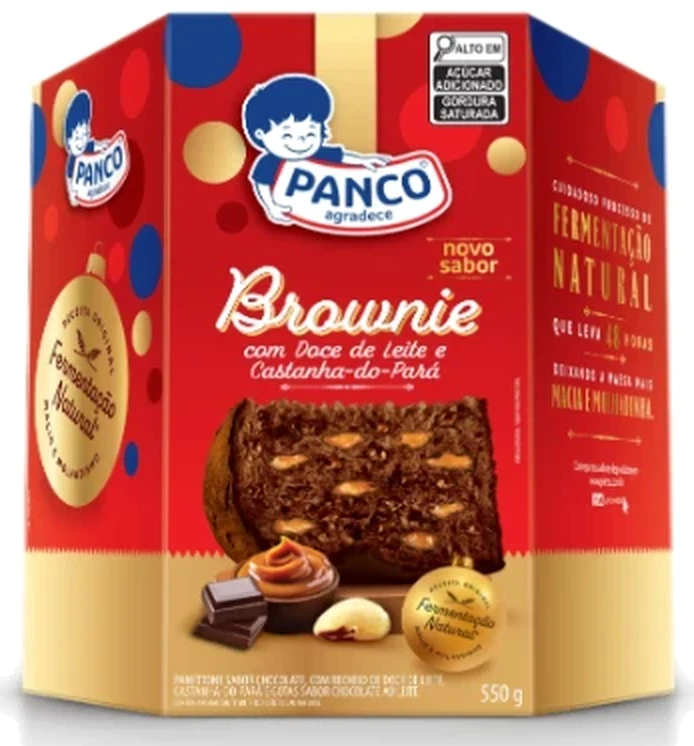
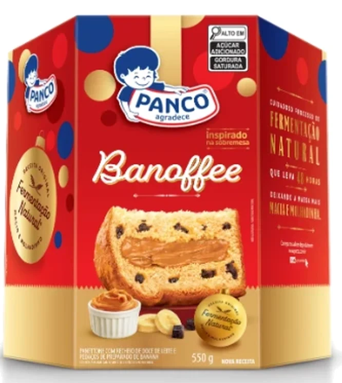
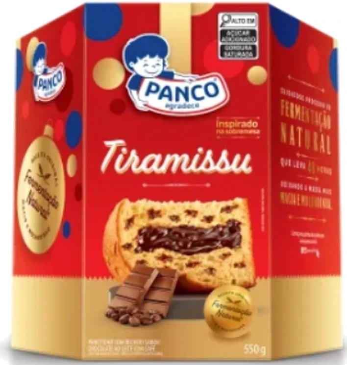
Linha atual 550 g · Brownie, Banoffee e Tiramissu
EST. = estimativa a partir das fotos e de medidas publicadas da linha. Medidas reais a validar com a Panco e com uma caixa física.
O briefing em seis metas
Seis metas, seis respostas.
01Estrutura diferenciada
Cortes, dobras e encaixes que viram assinatura de marca.
Antiprisma com vincos curvos02Mínimo de cola
Menos etapas na coladeira e menos material.
Um único ponto de cola03Faca otimizada
Uma peça só, sem peças soltas nem berço.
Faca de 769 × 468 mm04Empilhamento estável
A pilha precisa ficar em pé e bonita na gôndola.
Pilha contínua girando 45°05Montagem simples
Fecha sem ferramenta e sem cola na loja.
Fundo 1-2-3 e tampa com lingueta06Impacto com custo baixo
Premium onde o olho vê, econômico onde não vê.
Dourado só em 13% da área
02
Capítulo 02 de 05
Design
Uma forma que ninguém tem na gôndola e uma comunicação que conta o Natal da Panco.
01A forma
02A embalagem em 3D
03A comunicação
04O acabamento
05Três sabores
06Na gôndola
01O desafio02Design03Engenharia04Próximos passos05Por que a 75 LAB
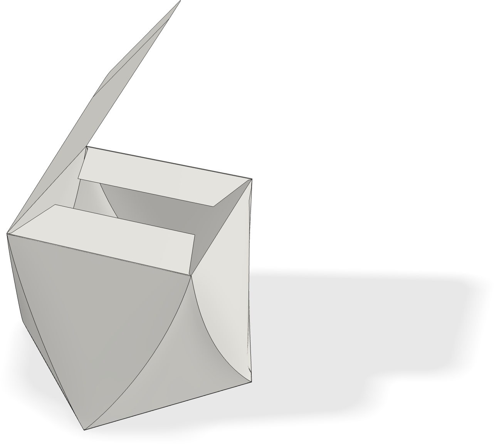
Tampa 17 × 17 cmcom lingueta de fechoContrapósseguram a tampa fechadaBase do topoquadrado girado 45°Escudoface do sabor, abauladaVinco curvoflecha de 12 mmLâminaface da árvore douradaPAN003 · Celebration Origami · estrutura R0 · antiprisma escudo · tampa aberta
A forma · antiprisma escudo
Um quadrado girado 45° vira escultura.
A base e a tampa são quadrados de 17 × 17 cm, girados 45° um sobre o outro. Entre eles, oito faces triangulares se alternam.
014 escudosAs faces de comunicação: marca, sabor e produto, sempre de frente.
024 lâminasAs faces que desenham a silhueta e levam a árvore dourada.
03Vinco curvo de 12 mmAbaúla o escudo para fora: mais personalidade e mais espaço para o panetone.
A embalagem em 3D
Explore a embalagem
Avançar percorre os enquadramentos · arraste para girar
A comunicação · o Natal em círculos
Os círculos da Panco viraram Natal.
A comunicação da Panco sempre foi feita dos seus clássicos círculos coloridos. No Natal, eles ganham estampas em dourado e viram bolas, fogos e celebração.
01Os círculos de sempreVermelho, azul e amarelo: a marca que a pessoa reconhece em qualquer gôndola.
02Estampas em douradoEstrelas, raios e listras transformam cada círculo em bola de Natal e fogos de fim de ano.
03Letra feita à mãoO nome do sabor escrito à mão traz o cuidado da fermentação natural.
A marca
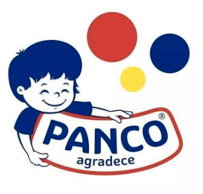
↓ no Natal
A embalagem
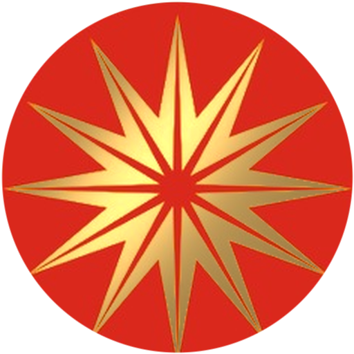
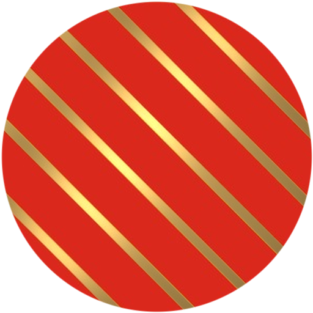
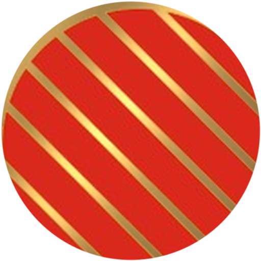
O acabamento · hot stamping com relevo
Dourado onde o olho para.
O foil dourado com relevo seco entra só onde conta: selo, nome do sabor, árvores e círculos. O vermelho chapado faz o ouro brilhar, e o brilho muda com a luz da loja.
13%da área impressa em dourado com relevo
1cor especial: o vermelho Panco faz o resto
Área dourada medida na arte final de cada sabor. Foil, relevo e registro a confirmar com a gráfica (recuo de cerca de 1 mm dos vincos).
A linha · 550 g
Uma estrutura, todos os sabores.
Uma estrutura única, pensada para otimizar a produção e valorizar toda a linha. O design mantém a unidade visual, enquanto cada sabor ganha seu próprio destaque.
BanoffeeDoce de leite e banana
BrownieDoce de leite e castanha-do-pará
TiramissuRecheio de chocolate
Na gôndola · pilha contínua
Uma caixa sobre a outra vira coluna.
Cada caixa gira 45° sobre a de baixo e encaixa na tampa. A pilha vira uma coluna facetada, com o sabor sempre de frente.
BanoffeeBrownieTiramissu
03
Capítulo 03 de 05
Engenharia
Uma peça só, um ponto de cola, montagem sem ferramenta.
01Montagem interativa
02A faca
03Menos cola, mais eficiência
04A embalagem em AR
01O desafio02Design03Engenharia04Próximos passos05Por que a 75 LAB
Engenharia · montagem
Da faca à caixa
100%Progresso da montagem
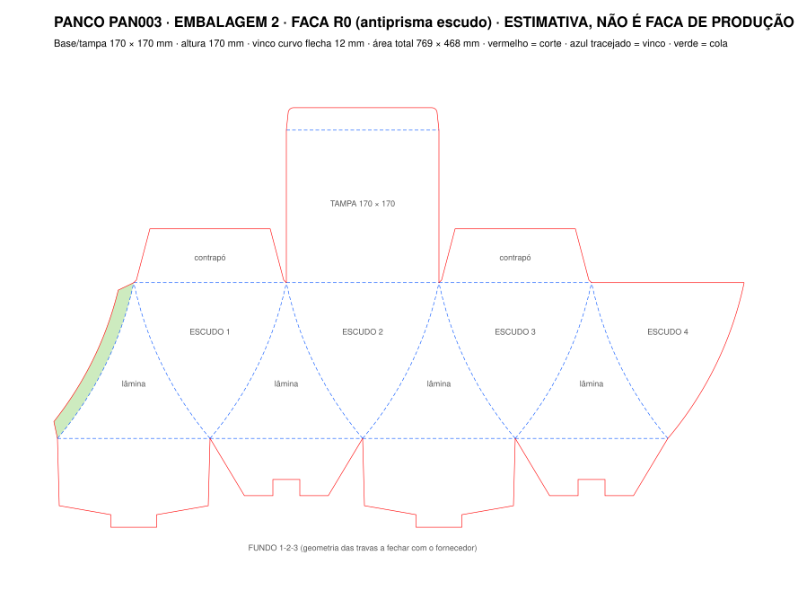
CorteVincoCola
A faca · R0
Uma peça, tudo nela.
01769 × 468 mmÁrea total da faca planificada, com tampa, fundo e abas.
028 vincos curvosFlecha de 12 mm: é o vinco que dá a forma, não a arte.
03Aba de cola de 15 mmO único ponto de cola, na lateral, feito na coladeira.
04Fundo 1-2-3Quatro abas que travam entre si, sem cola.
05Tampa com linguetaMais dois contrapós que seguram a tampa fechada.
Faca R0 de estudo, não é faca de produção. A geometria das travas do fundo e o aproveitamento de chapa serão fechados com o fornecedor.
Eficiência · validada por simulação
Menos cola, mais eficiência.
A montagem da página anterior não é ilustração: é a faca real dobrada por simulação física, painel por painel, com o papel praticamente sem esticar.
1ponto de cola: a aba lateral de 15 mm
0,4%de deformação máxima do cartão na dobra simulada
~6 mmde folga entre a parede e um panetone de 16 cm EST.
45°de giro para empilhar: a tampa encaixa na base da próxima
Simulação de dobra da 75 LAB sobre a faca R0 (malha do cartão quase inextensível, vincos livres). Folga calculada sobre o diâmetro estimado do panetone. Resistência ao empilhamento (BCT) e transporte a validar em protótipo.
Realidade aumentada
Coloque a caixa na sua mesa.
A embalagem em tamanho real, girando devagar. No celular, aponte a câmera para o QR code e abra direto em AR, sem app.
iPhone abre no AR Quick Look; Android, no Scene Viewer. No computador, arraste para girar.
04
Capítulo 04 de 05
Próximos passos
Do 3D aprovado à caixa na mão: o que validamos antes da produção.
01Do protótipo à produção
01O desafio02Design03Engenharia04Próximos passos05Por que a 75 LAB
Roteiro · da aprovação à produção
Cinco passos até a gôndola.
01Protótipo branco
Faca R0 em plotter de recorte para validar o vinco curvo e a colagem plana.
02Medidas reais
Panetone e caixa atual no paquímetro; ajuste fino de folgas e da tampa.
03Empilhamento
Teste de compressão (BCT) e de transporte na caixa de embarque.
04Fundo 1-2-3
Travas finais com o fornecedor da faca e da coladeira.
05Executivo e arte final
Faca de produção, prova de hot stamping e fechamento de arquivos.
05
Capítulo 05 de 05
Por que a 75 LAB
Quem somos, as provas e o próximo passo.
01Propósito e imprensa
02Diferencial
03Vantagens competitivas
04Nossos números
05Clientes
06Cases de ponto de venda
07Depoimentos em vídeo
01O desafio02Design03Engenharia04Próximos passos05Por que a 75 LAB
Nosso propósito
Transformar intenção em realidade no ponto de venda.
A 75 LAB nasceu da soma de dois lados que quase nunca se sentam à mesma mesa: o varejo e a indústria. Por mais de 15 anos vivemos a distância entre a intenção comercial de uma marca e o que de fato acontece na loja. Existimos para fechar essa distância.
IndústriaLançamento, categoria, P&Lo lado de quem vende para o varejo
← valor →
VarejoLayout, execução, aprovaçãoo lado de quem opera a loja
Não somos uma agência tradicional. Somos uma aceleradora de trade.
Modelo tradicional
BriefingRetrabalhoAtrasoVerba evapora
Modelo 75 LAB
IntençãoImersãoSoluçãoExecuçãoResultado
01Vivemos o trade, não só aprendemos
Os sócios vêm do varejo e da indústria: os dois lados do balcão estão na mesma mesa.
02Solução certa, nunca de prateleira
Montamos a estrutura pela demanda de cada cliente, não um pacote pronto.
03Para cada desafio, a equipe certa
Hub de especialistas e fornecedores, com governança ponta a ponta e sem markup oculto.
04Prova acima de promessa
Medimos o que entregamos: peça a peça, loja a loja.
0%projetos aprovados
−0%de custo de produção com o fornecedor certo
0+PDVs positivados
+0anos no trade, dos dois lados do balcão
Fonte: 75lab.com.br, números da 75 LAB.
Oito motivos para a 75 LAB estar no seu corredor.
Arte e engenharia na mesma casa
A peça sai da criação com executivo pronto para a fábrica.
Custo por peça otimizado
Chapa aproveitada, kit plano e material certo no lugar certo.
Três orçamentos, sem markup oculto
Todos os fornecedores cotam o mesmo executivo.
Realidade aumentada antes de produzir
O cliente vê a peça na loja antes de pagar a fábrica.
Auditoria com QR em cada peça
Foto, loja e data de cada instalação, sem planilha.
Sistema próprio de gestão
Prazo, versão e aprovação de cada peça num lugar só.
Peça que dura e se repõe
Componente com código: troca só o que quebrou.
Dos dois lados do balcão
Sócios que vieram do varejo e da indústria.
Números da 75 LAB · 12 meses medidos no nosso sistema
A 75 LAB em números: a operação que já rodamos hoje.
0entregas concluídas em 12 meses, entre jobs e etapas
0jobs concluídos de ponta a ponta no mesmo período
0clientes com demanda aberta nos últimos 12 meses
0jobs ativos ao mesmo tempo no pico, em 26/10/2026
0clientes atendidos em paralelo nesse mesmo pico
0dias úteisprazo mediano do pedido à entrega em baixa complexidade
0dias úteisprazo mediano em alta complexidade: stands, enxovais e obras
0h/mêsde trabalho apontadas tarefa a tarefa, de julho a setembro
Dados da própria 75 LAB, não de cliente. Fonte: Ariuno, sistema de gestão da 75 LAB · 28/10/2025 a 27/10/2026 · horas apontadas de jul a set/2026. Baixa complexidade: jobs com até 8 h de trabalho; alta: acima de 16 h.
Já estamos nos corredores de vocês.
Supermercado, atacarejo e loja de categoria: as marcas que atendemos negociam com os mesmos compradores e disputam as mesmas pontas.
Canal alimentarsupermercado, atacado e conveniência
Varejo especializadoloja de categoria e rede
Grandes marcas já estão na loja com a gente.
CuétaraDisplay sazonalBem BrasilPonta de gôndola
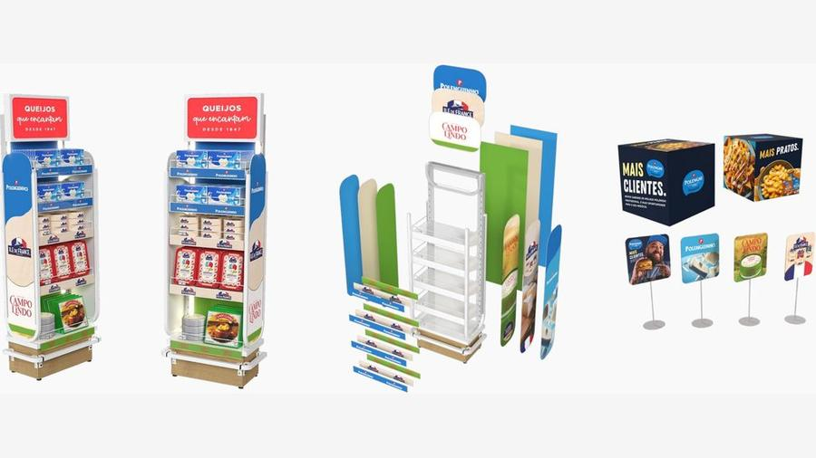
PolenghiEnxoval de PDVLactalisDisplays especiaisKelcoDisplays especiais
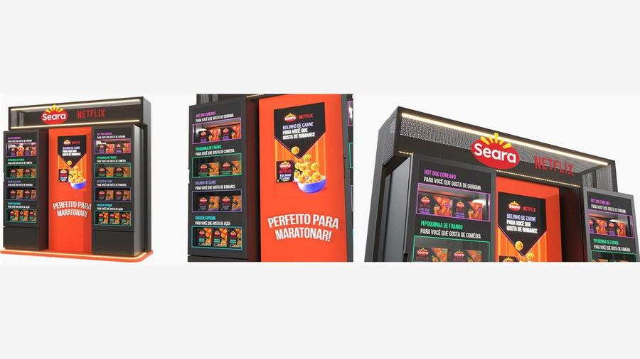
SearaPonta de gôndola
Quem já viveu um cronograma com a gente · stand Alltak Decor
“Desde a primeira reunião, me surpreenderam com essa parte de planejamento.
“Um programa viável de execução. Datas de aprovações, datas de execução, finalização para a entrega do stand.”
Marcelo AbreuAlltak
Projetos da 75 LAB em vídeoClique num vídeo para assistir no celular ao lado
Vídeos de projetos da 75 LAB: Instagram @setecincolab, site 75lab.com.br e acervo de cases.
75 LAB Estratégia, Design e Produção Ltda · CNPJ 55.470.982/0001-77 · CENU, Torre Norte, Av. das Nações Unidas, 12.901, Brooklin, São Paulo, SP · contato@75lab.com.br · 75lab.com.br
Embalagem Panco Celebration Origami · novembro de 2026
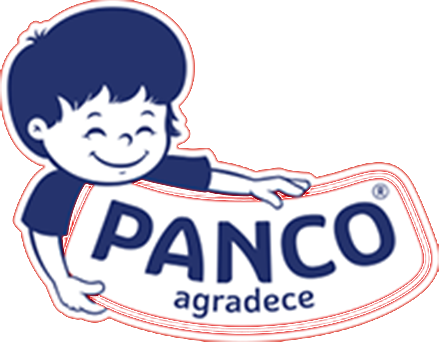
×
×
Gire o celular
A apresentação foi desenhada na horizontal. Deitado, o celular mostra a tela inteira.
 ← valor →
← valor →